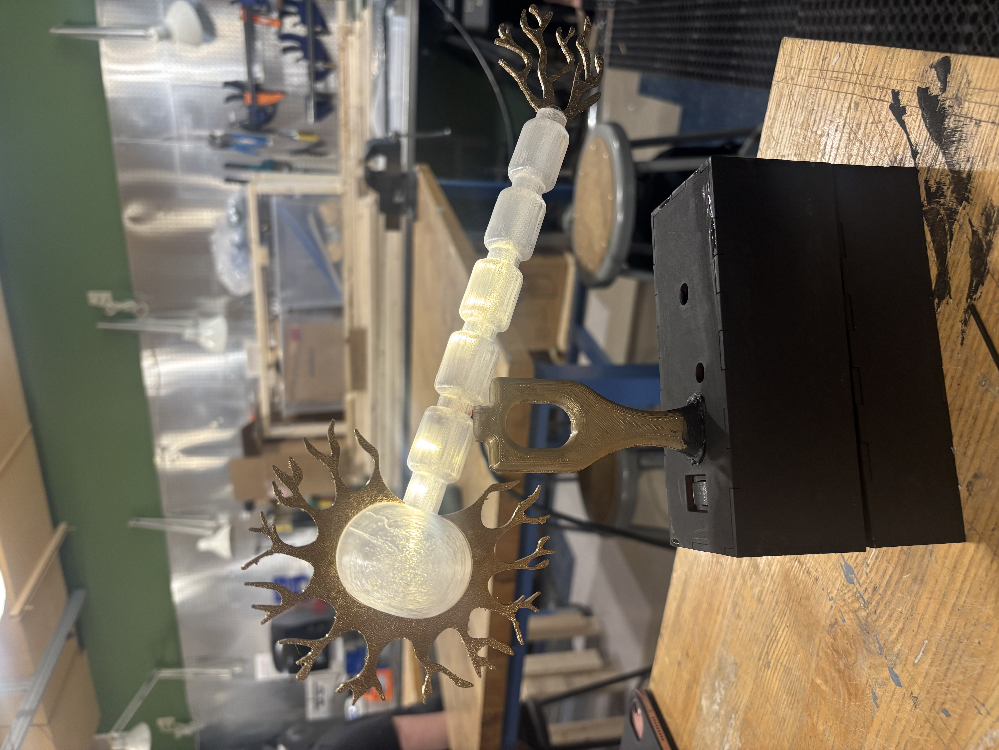
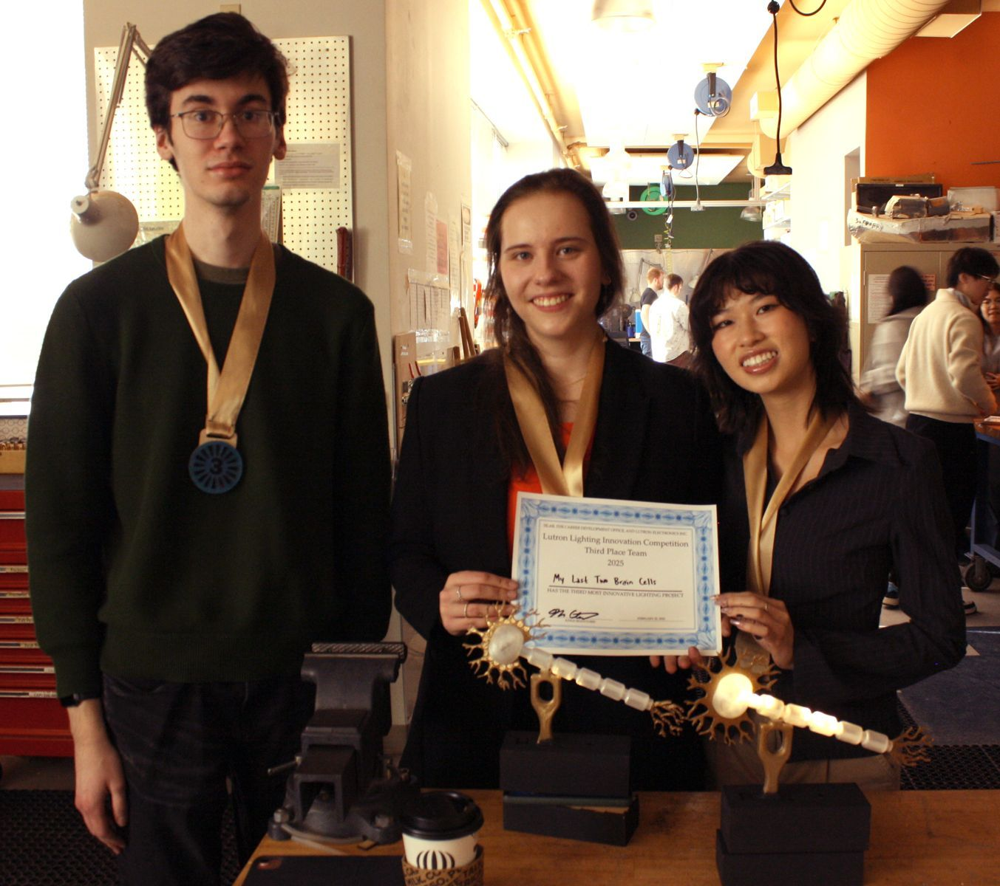

Project Overview
My team’s project called “My Last Two Brain Cells” created a realistic demonstration of how neurons fire and communicate with a simple sound to light circuit. I designed and built this circuit using only a transistor, two resistors, an LED, a microphone, and a 12-volt battery. As music plays, the microphone picks up vibrations, triggering the transistor to amplify current to the LED lights. This creates a dynamic, synchronized flashing effect that pulses perfectly in time with the music. Our project also featured a walkie-talkie element, allowing the music detected by one neuron to be transmitted to another. This enabled the second neuron to light up in perfect sync with the music, even from a distance.
Watch the system work:

My team placed third overall! I would like to thank my team Julie Bui and Henry Corrigan for their hard work and commitment to the project.
On a different note, as a lab advisor at SiLab, I had the opportunity to make the medals for this competition a second year in a row and it was a full circle moment for me to win a medal I made myself. These medals glow in the dark, which perfectly aligns with the motivations behind the Lutron Competition.
Read more about the SiLab Medals here